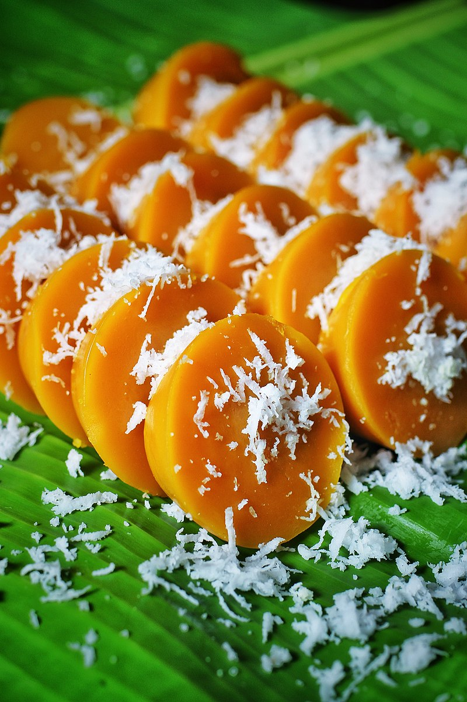

Kutsinta

Kutsinta (cuchinta) are Filipino steamed cakes made with flour, tapioca flour, and brown sugar. Soft, chewy and topped with grated coconut, they're a delicious breakfast, snack or dessert.
Ingredients
- 1 ½ cups flour
- ½ cup tapioca flour
- 1 ½ cups dark brown sugar
- 3 cups water
- 1 tablespoon atsuete powder
- 1 tablespoon lye water
Steps
- In a bowl, combine flour, tapioca flour, sugar, and water. Stir well until dissolved and mixture is smooth.
- Add atsuete and stir until well dispersed and the desired color is achieved.
- Add lye water and stir.
- Lightly grease inside of molds with melted butter (If using silicone molds, skip this step). Fill molds to about ¾ full.
- Add water to the steamer and bring to simmer over medium heat.
- Steam kutsinta for about 40 to 45 minutes or until mixture is set. Remove from heat and allow to cool.
- Gently remove from molds and serve with grated coconut.
Back to main page